16 places. 6 ancient characters. 3,500 years of history. One family trip.
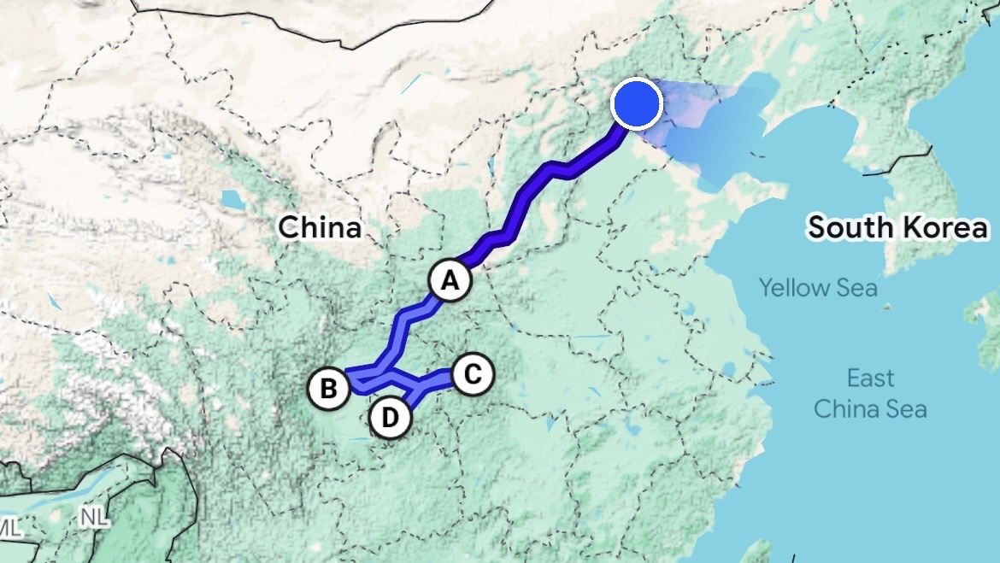
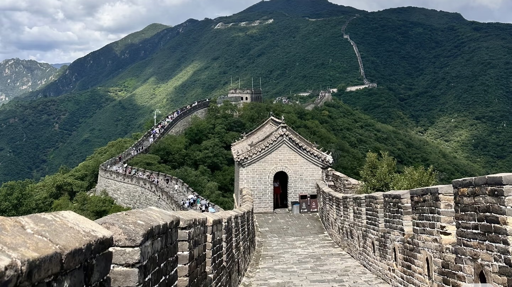
The most dramatic stretch of the Wall near Beijing — wild crenellations across forested ridgelines, reached by cable car. The least crowded of the main sections.
9,999 rooms of vermilion walls and golden rooftiles. Home to 24 emperors for five centuries. Now the world's most visited museum. Closed Mondays — plan accordingly.
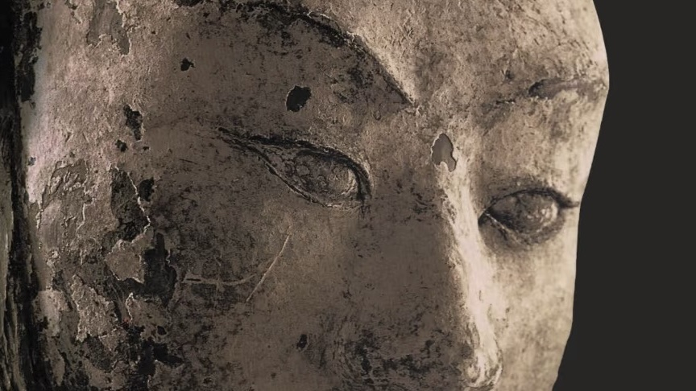
Eight thousand life-size clay soldiers buried in 210 BC to guard the First Emperor. Discovered in 1974 by a farmer digging a well. Every single face is unique.
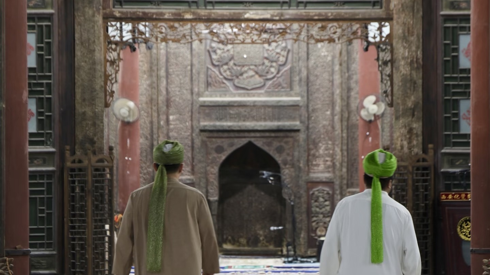
Lantern-hung alleys where Xi'an's Hui Muslim community has traded for a thousand years. Lamb skewers, pomegranate juice, cumin smoke — a teenager's dream of street food.
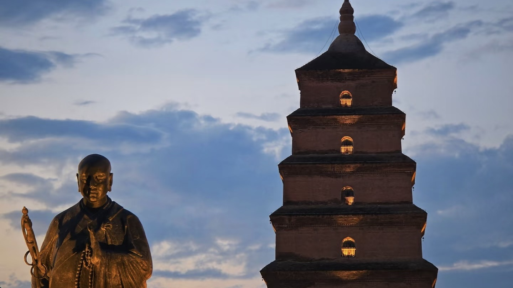
The Bell Tower marks the exact centre of ancient Xi'an. The Pagoda was built in 652 AD to house Buddhist scriptures carried back from India along the Silk Road by the monk Xuanzang.
A cobblestone street of calligraphy studios and scroll painters beside the old City Wall. The best place in Xi'an for handmade souvenirs — name seals cut while you wait.
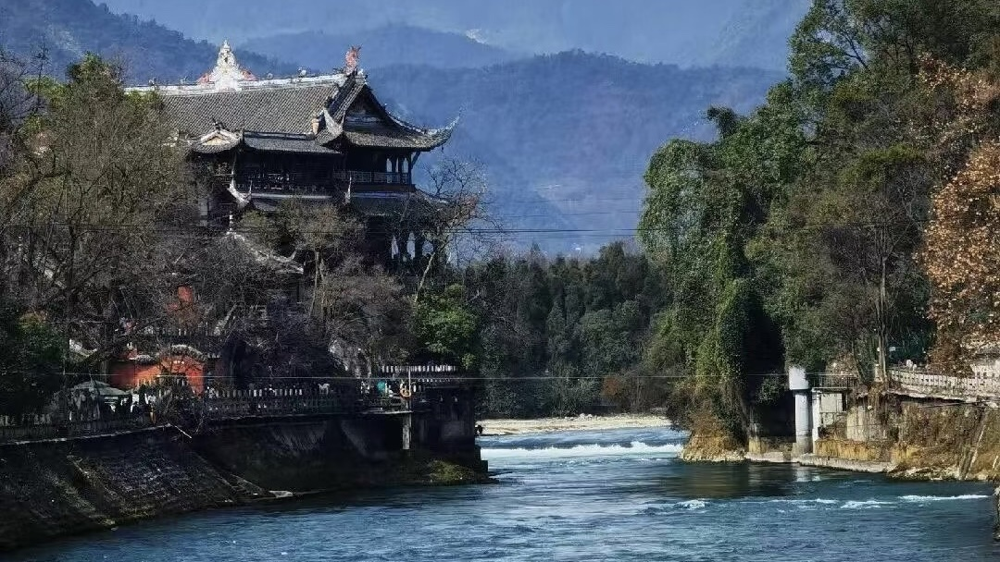
The world's oldest operating irrigation system — built in 256 BC without a dam. The river splits itself and regulates itself using only geometry. Still watering 5.3 million hectares today.
A real mountain nature reserve, not a zoo. Pandas are most active 9–11:30am, tumbling around with spectacular indifference to onlookers. Buggy service available inside.
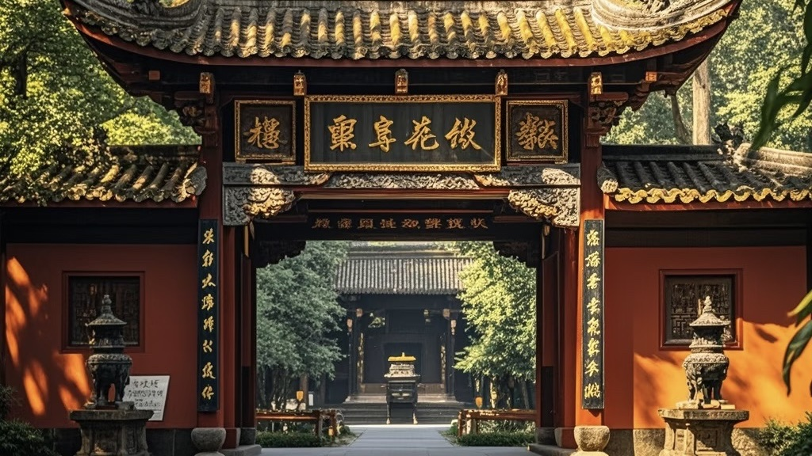
A temple-museum for the heroes of the Three Kingdoms (220–280 AD). The great strategist Zhuge Liang is enshrined here — China's eternal symbol of wisdom and loyalty. Shaded gardens, gentle walking, many benches.
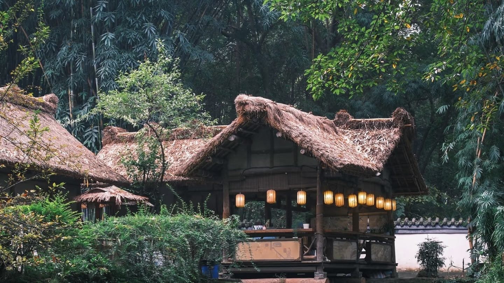
Where the Tang poet Du Fu lived in exile (759–762 AD), writing 240 of his 1,400 poems. A serene garden with lotus ponds and bamboo groves. The most knee-friendly site on the whole trip.
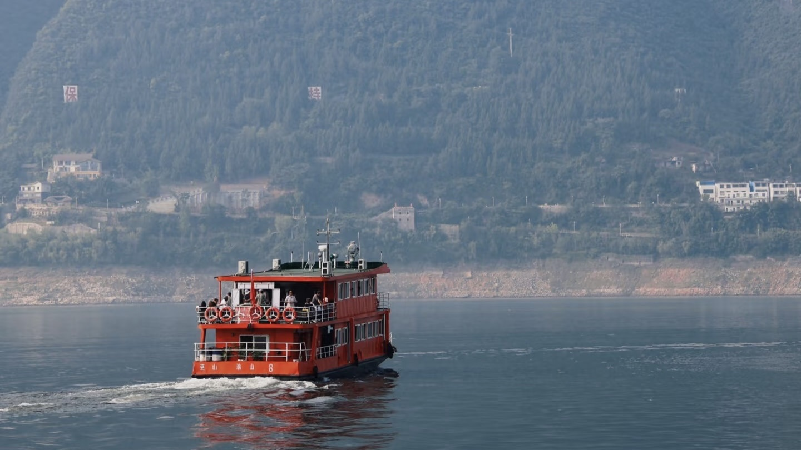
A four-hour boat journey into the Daning River — sheer limestone cliffs hundreds of metres on both sides, wild macaque monkeys on the banks. Seated throughout. The most spectacular thing on the whole itinerary.
A solitary rock pinnacle with the unmistakable silhouette of a woman — Yao Ji, daughter of the Queen Mother of the West, who turned to stone rather than leave the mountains she loved. Shuttle buses to viewpoint.
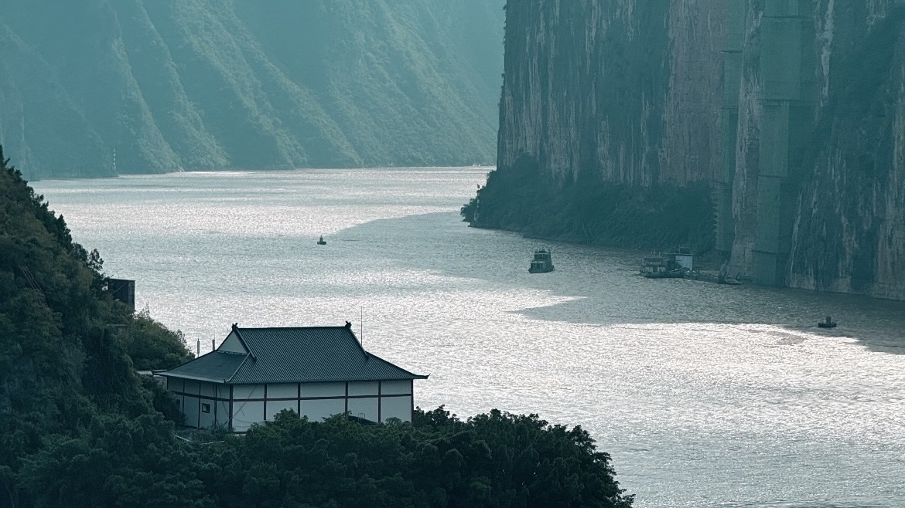
A temple-fortress on a rocky island at the mouth of Qutang Gorge. The poet Li Bai received his pardon from exile here at dawn in 762 AD and wrote one of China's most memorised poems. Views down the gorge are unforgettable.
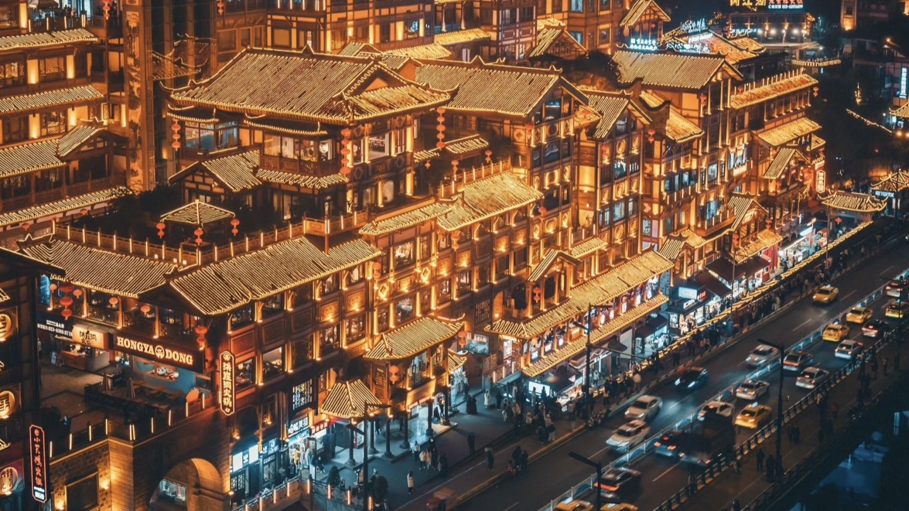
Eleven stacked floors of restaurants and bars built into a cliff face over the Jialing River, blazing with red lanterns at night. Said to have inspired Miyazaki's Spirited Away. Arrive at dusk.
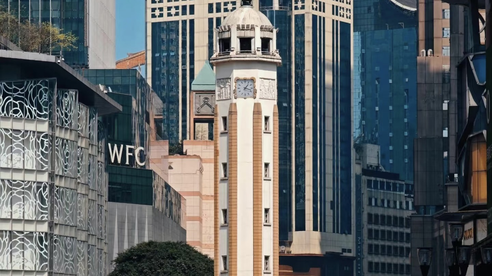
Chongqing's Times Square — a 27-metre war memorial tower surrounded by neon-lit pedestrian streets humming until midnight. Street food, crowds, energy. Flat pedestrian zone — good for mobility.
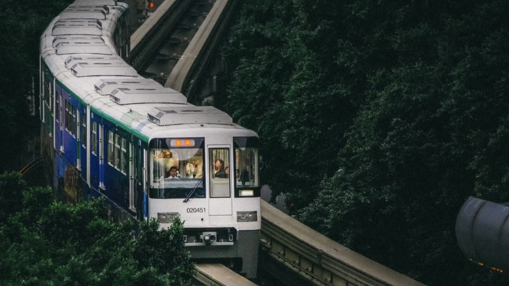
A metro line that passes directly through the 6th–8th floors of a residential apartment block. Residents hear trains through their walls. A 13-year-old will talk about this for years. Flat street-level viewing.
The headland where the Yangtze and Jialing rivers meet in a visible line of two different-coloured waters. One of the great river views in China. Lift access from the dock area.
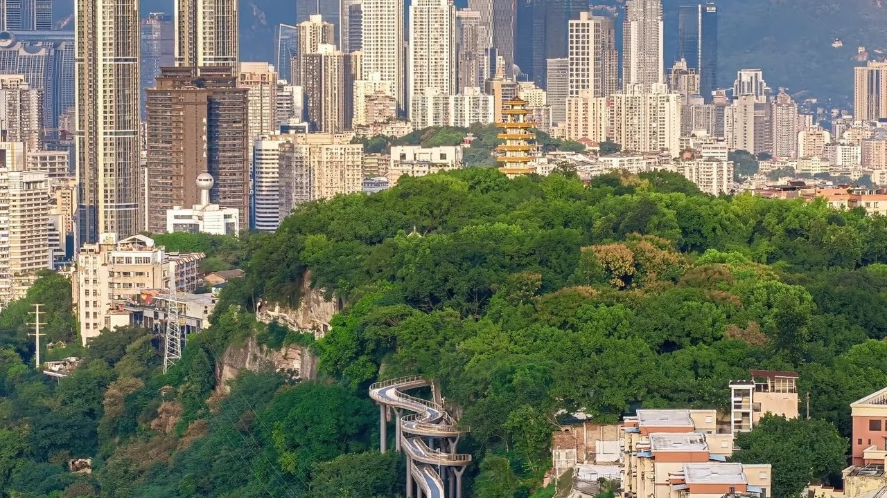
Panoramic hilltop view of Chongqing's cyberpunk skyline — skyscrapers on cliffsides, illuminated highways threading between mountains. Worth the climb for those who can manage it.